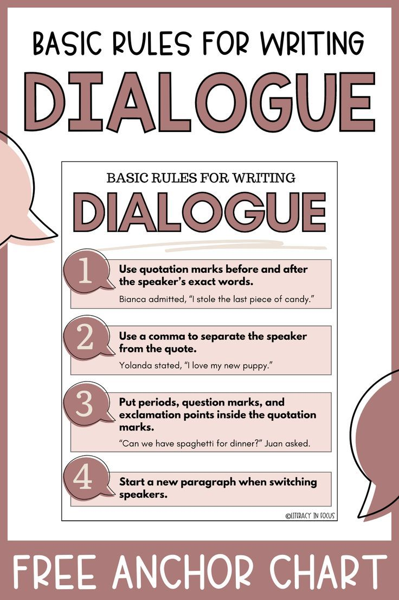

Dialog Writing
What is a dialogue?
A dialogue literally means a conversation between two people, either verbal or written. Generally, by a dialogue, we mean a conversation in a drama or a film. It may also be called a formal discussion between two persons or two groups. However, a dialogue is an art of conversation, and the conversation is generally held between two persons.
When a dialogue is written, it becomes a type of composition, and the nature, form, and style of this composition become dramatic. Dialogue writing is sometimes used for language learners. It is a useful form of composition, especially for students who are trying to acquire a command of spoken English.
Dialogue practice between two learners of English can help them to acquire speaking and listening skills. Students should learn how to compose dialogues, which can help them learn the language and acquire speaking skills.
How to write a dialogue?
- . A careful preparation is necessary for writing a dialogue. Before beginning to write a dialogue a student can make a plan or outline of the dialogue to be written..
- The writer should carefully think over the subject given and jot down briefly the arguments or opinions about it.
- He/she will arrange the ideas in some logical order, so that one idea will arise naturally from another in the course of the conversation.
- The writer should try to imagine what would be the way in which each character in the dialogue would express his/her views. To do this, the writer must have in his mind a clear idea of the imaginary persons who are taking part in the conversation.
- The writer should keep in mind that his/her dialogue, when completed, should read like a real and spontaneous conversation. So he/she should make his/her imaginary characters talk in an easy, familiar and natural manner. The writer should avoid stilted and bookish phrases. While writing the dialogue, he/she should remember how real people talk in friendly conversation and reproduce that conversational style.
- . The dialogue should begin in an interesting way, so that the reader's attention may be arrested from the very first.
- The language of a dialogue should be as far as possible colloquial, but it does not mean that the language may be ungrammatical. The persons in the dialogue should be made to speak good English. The language should be plain and simple. Slang and profane words should not be used.
- The dialogue should be written in an interesting, natural and realistic manner as far as possible. The whole conversation should be brief, and the questions and replies should be as concise and pointed as possible.
Fundamental Rules for Writing Dialogue

Basic Format and Structure of a Dialogue
Dialogues can be part of a story, a play or a movie. Each one has a different structure and format in which the dialogues have to be presented; however, there is a basic structure that can be followed. Go through the following points to learn the essential attributes a dialogue must have.
- The first thing you have to do before you write a dialogue is to decide who the characters are.
- You should also have a clear idea of the plot of the story, or in general, the context of the dialogue.
- Dialogues can be just a sentence, two or three lines, or even a short paragraph. Always remember that each character’s dialogue, no matter how short or long, has to be written on the next line. No two dialogues should appear on the same line.
- If the dialogues are one-liners, you can write them one after the other. However, if each character speaks in chunks, use an optimum line spacing to show the difference.
- Be careful with the tense used in the dialogue.
- It is better to skip small talk and start off with the point of discussion unless the small talk is crucial to setting the mood.
Punctuation Rules for Writing Dialogue
In every form of writing, punctuation is an important factor that makes it sensible. In the same manner, dialogue writing also would not make any sense without proper punctuation. Learn how to punctuate dialogues by going through the following points.
- The first rule would be adding a colon after the name of the character to indicate that the particular character is the one speaking at the moment. Sometimes, a hyphen is used instead of a colon.
- The name of the character should always start with a capital letter as it is a proper noun. Sometimes, you will have characters such as villagers, student 1, student 2, etc. In these cases also, you will have to use a capital letter.
- Dialogues are to be placed within quotation marks.
- If you are including a character’s dialogue in another character’s dialogue, it has to be placed within single quotation marks. For example: “Don’t you think Rakesh saying ‘I will take the lead’ has some hidden agenda?”
- Also remember that any punctuation mark corresponding to the dialogue should always be placed within double quotation marks. For instance, if the dialogue is an interrogative sentence, the question mark has to come first marking the end of the sentence followed by the double quotation marks marking the end of the dialogue.
- A dialogue can be separated using dialogue tags like ‘he said’ to attribute the dialogue to a speaker
- When you insert the tag in the middle of the dialogue, make sure you close the quotation marks before the tag. The tag is preceded and followed by a comma. When you open quotation marks to continue the dialogue, see to it that you use a small letter to begin with if it is the continuation of the dialogue, and close the quotation marks once the dialogue is complete. For example: “Do you know”, he shouted to everyone, “who the new manager is?”
- If the dialogue tag is positioned in the beginning of the sentence, see to it that you start it with a capital letter as you are starting a new sentence. Place a comma after the dialogue tag followed by open quotation marks, the dialogue starting with a capital letter followed by the punctuation mark of the quote and close quotation marks. For example: Josh mumbled, “Nobody understands the main problem here.”
- A dialogue can also appear at the end of the sentence. In this case, the quotation comes first. Once you punctuate the quote and close the quotation marks, place the dialogue tag. Note that the dialogue tag is not capitalised. For example: “Are you coming with us?” Sarah asked.
- If a character’s dialogue is being interrupted by another character, use a dash to indicate the interference. For example: “I was wondering –”
- Actions and body language of characters can be described in sentences and they can appear in between dialogues. For example: “I am not interested.” She shrugged her shoulders. “But, I will do it just for you.”
“Are you ready to go?”
What Not to Do When Writing a Dialogue
Now that you know how to write a dialogue, let us also look at what all you are not supposed to do when writing a dialogue.
- Using dialogue tags does give some clarity about the action and body language of the characters, but see to it that you do not use dialogue tags with every single dialogue. Also, make sure you don’t use too little.
- Using colloquial language is allowed in dialogue writing, but use them only if it matches the context.
- Dialogues need not be grammatically correct all the time. That does not mean you can write structureless sentences. You can have individual words or phrases as a dialogue. For example: “What?”, “Of course!”, “She started the fight?”
Sample Examples
Dialogues from Stories and Plays
Example 1: Dialogues from ‘The Crocodile and the Monkey’
- The crocodile’s wife thought to herself, “If the monkey eats only these sweet rose-apples, his flesh must be sweet too. He would be a delicious dinner.”
- The monkey climbed up the tree to safety. He looked at the crocodile and said, “Now you can go back to your wicked wife and tell her that her husband is the biggest fool in this world. Your foolishness has no parallel. You were ready to take my life because of an unjust demand from your wife. Then you were stupid enough to believe me and brought me back to the tree.”
Example 2: Dialogues from ‘The Gift of the Magi’
- “Twenty dollars,” said Mrs. Sofronie, lifting the hair to feel its weight. “Give it to me quick,” said Della.
- “Jim, dear,” she cried, “don’t look at me like that. I had my hair cut off and sold it. I couldn’t live through Christmas without giving you a gift. My hair will grow again. You won’t care, will you? My hair grows very fast. It’s Christmas, Jim. Let’s be happy. You don’t know what a nice—what a beautiful, nice gift I got for you.”
Example 3: Dialogues from ‘The Merchant of Venice’
Here are a few quotes from the play, ‘The Merchant of Venice’ by William Shakespeare.
Shylock: Three thousand ducats; well.
Bassanio: Ay, sir, for three months.
Shylock: For three months; well.
Bassanio: For which, as I told you, Antonio shall be bound.
Shylock: Antonio shall become bound; well.
Bassanio: May you stead me? Will you pleasure me? shall I know your answer?
Shylock: Three thousand ducats for three months and Antonio bound.
Bassanio: And do you, Gratiano, mean good faith?
Gratiano: Yes, faith, my lord.
Bassanio: Our feast shall be much honour’d in your marriage.
Gratiano: We’ll play with them the first boy for a thousand ducats.
Dialogues from Movies and TV Shows
Example 1: Dialogues from ‘Moana’
Maui: Boat! A boat! The Gods have given me a (screams)
Moana: Maui, shapeshifter, demigod of the wind and sea. I am Moana…
Maui: Hero of Man.
Moana: Wh..What?
Maui: It’s actually Maui, shapeshifter, demigod of the wind and sea, hero of man. I interrupted, from the top, hero of man. Go.
Moana: I am Mo…
Maui: Sorry, sorry, sorry, sorry. And women. Men and women. Both. All. Not a guy-girl thing. Ah, you know, Maui is a hero to all. You’re doing great.
Moana: What? No, I came here to…
Maui: Oh, of course, of course. Yes, yes, yes, yes. Maui always has time for his fans. When you use a bird to write with, it’s called tweeting. (laughs) I know, not every day you get a chance to meet your hero.
Moana: You are not my hero. And I’m not here so you can sign my oar. I’m here because you stole the heart of Te Fiti and you will board my boat, sail across the sea, and put it back.
Example 2: Dialogues from ‘Anne with an E’
Diana: Anne!
Anne: Hello, Diana!
Diana: My, what have you done to your hat?
Anne: Well, I wanted to make a good first impression and it was so plain.
Diana: You’re making an impression all right.
Anne: I’m glad you found your way.
Diana: I expect we should be able to walk together soon.
Anne: We can’t?
Diana: I’m sure it won’t be long until my parents accept you, now that you’re a Cuthbert and all.
Exercise
- Write a dialogue between a mother and her daughter about a new teacher.
- Write a dialogue between two friends on the value of physical exercise.
- Write a dialogue between two boys about the life of a teacher and that of a doctor.
- Write a dialogue between a mother and her daughter about her hostel.
- Write a dialogue between the Headmaster and a student regarding the student's full free studentship.
- Write a dialogue between two students about a study tour.
- Write a dialogue between a brother and his sister about the exhibition they visited together.
- Write a dialogue between a master and his servant who prays for a week's leave.
- Write a dialogue between a businessman and a job-seeker.
- Write a dialogue between two students about their preparation for the Test Examination.